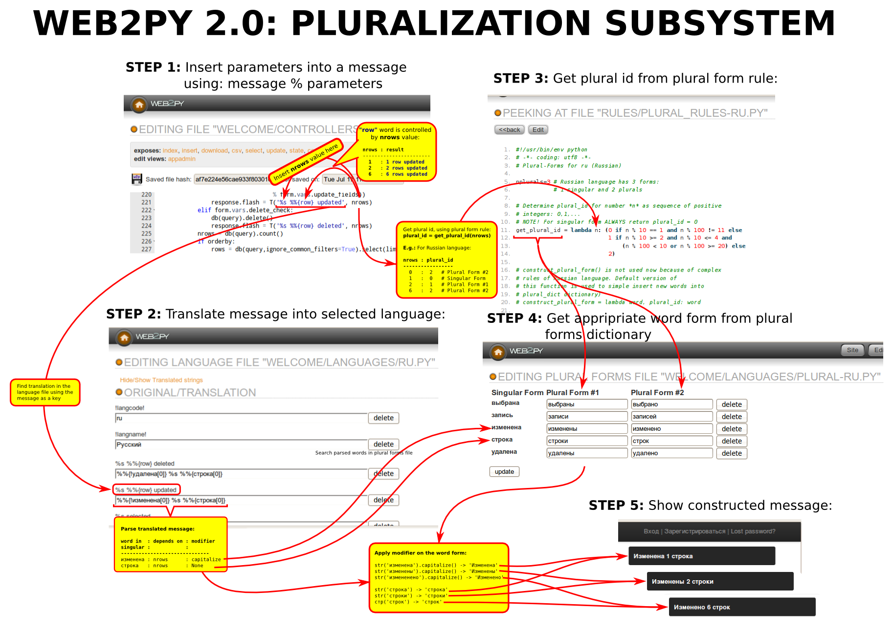

Many changes were made In web2py international languages support system, that improved web2py as an Enterprise Web Framework. Since now it will be easy to use web2py to create single/multi-languages sites, where English is not used at all (such as bilingual (e.g."Ukrainian/Russian") or simple mono-lingual (e.g."Polish") sites etc.) In this release plural-forms support was added, so now we can present information to users in more natural way, taking into consideration grammar rules of a particular language. Now multi-lingual messages can be extended with markmin notation.
The first innovation:
Previously it was necessary to exactly indicate the expected language codes in filenames from "languages/*" because different Internet browsers mark, for example, the Russian language in several ways, as "ru", "ru-ru" or "ru-by", etc. So it was necessary to keep all files ("ru.py", "ru-ru.py" and "ru-by.py") with the same content in the "languages/" directory. Especially for this case the list of languages (and not a particular language) was invented to use in T.current_languages() and T.force(). Previously it was necessary to make records the following way:
T.set_current_languages ('en','en-au','en-bz','en-ca','en-cb','en-gb','en-ie','en-jm','en-nz','en-ph','en-tt','en-us','en-za','en-zw'):)))
What has changed? The way of language selection in T.force() has changed. Now the language selection algorithm is the following:
Let given language be: "aa-bb"
Language file search way is: "aa-bb.py" -> "aa.py" -> "aa*.py"
So now all the languages such as "aa*" will match a file with filename: aa.py
This allows us to define default language in each language group (e.g. "en*", "ru*", "uk*", "fr*", ...).
For example, having "pt-pt.py" and "pt-br.py" translation files, we can make one of them default in the "pt" language group and save it as "pt.py". Let it be "pt-pt.py" file. Then all "pt*" language codes (except "pt-br", which we have specified) will switch to "pt-pt" in the file "pt.py"
The last step is especially interesting -> aa*.py
This selection allows you to select the first "parallel" language, if there is no default language in a group.
For example, if we leave both language files pt-pt.py and pt-br.py, without creating a pt.py file, the first language that comes in the list (most likely in alphabetical order) will be selected when you specify the language code as 'pt' (it may be necessary when using "languages/default.py" file, see below).
However here comes the question - what specific language is default in the 'pt' group: 'pt-pt' or 'pt-br'? Now we cannot learn it from the file name.
Here we come to the following improvements:
Two pseudo-keys are added to language files:
!langcode! - specifies the real language code (by default it is the same as the language code from filename)!langname! - specifies the language name in national subscription. It is used to select language by a customer. Why is the language name written in national subscription? That is because a customer cannot know English, right? She will select the world which she can read. By default this string is the same as the !langcode!So in uk.py (Ukrainian) language file we can write:
{
'!langcode!': 'uk-ua',
'!langname!': 'Українська',
...
}Why do these pseudo-keys start with '!'? - That is because ASCII-code of '!' is less than codes of all other printable characters (except SPACE). And dictionary is saved in alphabetical order (see write_dict() in gluon/languages.py). So these keys will be in the first positions in language files.
A new function T.get_possible_languages_info(lang=None) which gets information from these pseudo-keys is added to translator class. This function returns information (tuple(langcode, langname, lang_mtime)) about the specified language or dictionary with all possible languages from APP/languages directory. The language code from filename is the key in this directory.
T.accepted_language (uk.py ==> T.accepted_language == 'uk')!langcode! pseudo-keys can be accessed using T('!langcode!') or T.get_possible_languages_info(T.accepted_language)[0]T('!langname!') or T.get_possible_languages_info(T.accepted_language)[1]Next improvement:
From now on, any language can be declared as system default!
It is necessary for monolingual/bilingual websites in languages other than English. First, let give the definition: what is the system-default-language? It is a language in which messages are written in source files using T() or T.M() (described below) functions: e.g. T("message in default-language") or T.M("message in default language").
In Web2py Core all messages are written in English. But the user application can use a different language in T() function call. To use the user language as the default language it is necessary to translate all web2py core messages into this language. The languages/default.py is used for this purpose. How it works:
MESSAGES IN T("") MESSAGES IN DEFAULT LANGUAGE MESSAGES IN AA LANGUAGE
CORE T("English Msg") =>default.py=> "User lang msg"
CORE T("English Msg") =>AA.py ====================================> "AA language message"
USERAPP T("User lang msg") =============> "User lang msg"
USERAPP T("User lang msg") =>default.py=> "Changed User lang msg" (change msg w/o changing sources)
USERAPP T("User lang msg") =>AA.py ====================================> AA language message"Additional Benefits: default.py is also convenient for English users. They can change any message (english => english) or date format without sources correction, simply stating "translation" in default.py
To make your language the default language it is enough to rename the language file to default.py:
# cd welcome/languages
# mv uk.py default.pyand make sure that pseudo-keys '!langcode!' and '!langname!' are correctly filled. E.g.:
$cat default.py
{
'!langcode!': 'en-us',
'!langname!': 'English (US)',
...
}Using default.py we don't get default language in 'en' group (because our filename is 'default' but not an language code). But using third rule from p.1 all "en*" languages will be successfully switched to 'en-us' "parallel" language.
NOTE: default.py is not automatically updated with translations (using translator.findT()) like the other language files, so any changes should be done manually.
T.M() function call allows use markmin syntax in translations easily. Simply extend T() with "point-em" extention: T.M() in your sources and you can use markmin notation in your message.
Markmin syntax allows to use bold, italic, strikeout selection, URLs and many others in your messages (see gluon/contrib/markmin for detail) Also markmin syntax can process '' escape character (written as '\') to escape markmin characters such as []*`'{}.
Markmin notation is based on plain text, but the result is different from plain text. It is difficult to define in the language file with translations which notice will be displayed in plain text, and which contains a markmin-formated text. T.M() inserts @markmin: prefix in languages files in order to let the translator known that this message allows to use markmin notation:
>>> print T("this is a **text**") # print plain text
this is a **text**
>>> T.M("this is a **text**") # print html from markmin text
this is a <strong>text</strong>Additional benefit: T.M() is an HTML-helper (as XML() is) and returns the html-code, so it does not need to wrap it with XML() function, when its parameters are HTML-helpers too:
>>> print xmlescape(T("this is a %s", STRONG("text")))
this is a <strong>text</strong>
>>> print xmlescape(XML(T("this is a %s", STRONG("text"))))
this is a <strong>text</strong>
>>> print xmlescape(T.M("this is a %s", STRONG("text")))
this is a <strong>text</strong>BUT:
>>> print xmlescape(M("this is a %s", "<strong>text</strong>"))
this is a <strong>text</strong>Why? It because, only HTML-helpers is allowed to insert html-tags into a message:
>>> print xmlescape(M("this is a %s", XML("<strong>text</strong>")))
this is a <strong>text</strong>Thus the translator can include/exclude markmin-notation by adding/removing "point-em" extention of T(): T("text") ==> T.M("text").
>>> print T("simple **%s**", "text")
simple **text**
>>> print T.M("markmin **%s**", "text")
markmin <strong>text</strong>You also can use other filters (such as "markdown") instead of "markmin" by using filter and ftag parameters of T.M():
>>> from gluon.contrib.markdown import markdown
>>> print T.M("This is a *markdown* text!", filter=lambda s: markdown(s).encode('utf-8'), ftag="markdown")
<p>This is a <em>markdown</em> text!</p>Or even use markdown as a default filter:
>>> T.filter=lambda s: markdown(s).encode('utf-8')
>>> T.ftag="markdown"
>>> print T.M("default *markdown* filter is used now!")
<p>default <em>markdown</em> filter is used now!</p>Message translation and markmin-formating requires much more computing resources than a normal text output. In order to make markmin-based messages output as fast as simple plain text output the result of markmin2html.render() call is cached and from now on each time only this cached text with parameters substitution is returned (see tcache in language.py for detail).
The cache is invalidated only when the translation file is changed on the disk. If you need to use uncached markmin-text or use additional features of markmin2html.render() such as environment, URL, auto, etc. you must call markmin2html.render() manually:
>>> from gluon.contrib.markmin.markmin2html import render
>>> print XML(render(T("this is a **test**"), sep=""))
this is a <strong>test</strong>Also you can create you own T() filter (see p.4 above)
utf8.Utf8() class is the descendant of <str> type. It can be used anywhere str type is used. The text message is stored in utf-8, but all significant functions (such as upper(), lower(), slice, []) are performed after converting utf-8 string to unicode and back to utf-8. In this case you can use Utf8 class as a shortcut of this operation: string.decode('utf-8').<unicode_function>.encode('utf-8').
This class can mix Utf8, str and Unicode strings. Also it uses Unicode Collation Algorithm (using gluon.contrib.pyuca library) for utf-8/Unicode strings comparison and sorting. To known more please see the doctests() in the utf8.py file.
The base presupposition of this class usage is: "ALL strings in the application are either of utf-8 or Unicode type, even when simple str type is used. Utf-8 is only a "packed" version of Unicode, so utf-8 and Unicode strings are interchangeable."
CAUTION! This class is slower than str/unicode! Use it in user space only! DO NOT use it inside intensive loops. Simply decode string(s) to unicode before loop and encode it back to utf-8 string(s) after intensive calculation.
Example of Utf8 class usage:
>>> def fun(s):
... return s[:3]
>>> s='abcd'
>>> fun(s)
'abc'
>>> s='基本情報'
>>> fun(s)
'\xe5\x9f\xba' <= This is not three characters, this is three bytes!
>>> from utf8 import Utf8
>>> fun(Utf8(s))
'基本情'
>>> str(fun(Utf8(s)))
'\xe5\x9f\xba\xe6\x9c\xac\xe6\x83\x85'Pluralization subsystem (Plural Form Subsystem - PFS) is used to change on a fly word form depending on numeric parameters. For example:
PFS is a part of national languages support system (NLSS), because rules, used to choose an appropriate word form, are different in each human language.
PFS has a very good performance. It's activated only when T() or T.M() is used with non empty symbols parameter, so all messages which do not use symbols parameter can work as usually:
T("this is a text") | -> PFS is not activated (symbol parameter is not used) |
T("blabla %s") % var | -> PFS is started, but searches for only this regular expression template: '%{.*} and exit |
T("blabla %s", symbols=var) | -> the same action |
T("blabla %s %%{word}", symbols=10) | -> PFS is activated for "word" and 10. Result will be: "blabla 10 words" |
PFS consists from 3 parts:
%%{}) to mark words in T()-messagesrules/plural_rules-??.py)app/languages/plural-??.py)%%{} placeholder is used for marking words or phrases whose forms can be changed depending on numeric parameters in a message.
This placeholder works only when T() calls with non empty symbols parameter:
T("message", symbols=(param0, param1,...paramn-1)) or
T("message", symbols=dict(key1=value, key2=value,...))You can use T() % symbols as well:
T("message") % (param0, param1,...paramn-1)
T("message") % dict(key1=value, key2=value,...)%%{[<modifier>]<world>[<parameter>]}, where:
%%{word[0]} (if no modifiers are used).symbols[index] gives us a number used to make a decision which word form to choose.symbols[key] is used to get the numeric parameter from symbols dict%%{word(%i)} or %%{word(%(num)s)})Example:
T("%%{?A?%s} %%{book}") % books ==>
| books | : OUTPUT |
| 1 | : "A book" |
| 0 | : "0 books" |
| 10 | : "10 books" |
NOTE: Word1 can be empty string.
Example:
T("%%{?A?%s?No} %%{book}") % books ==>
| books | : OUTPUT |
| 1 | : A book |
| 0 | : No books |
| 10 | : 10 books |
NOTE: Word1 and word0 can be empty string.
Examples:
T("blabla %s %%{word}", symbols=var) -> %%{word} by default means %%{word[0]}, where [0] is an item index in symbols tuple .
T("blabla %s %s %%{word[1]}", (var1, var2)) -> PFS is used for "word" and var2 respectively.
You can use several %%{} placeholders with one index:
T("%%{this} %%{is} %s %%{book}", var) OR T("%%{this[0]} %%{is[0]} %s %%{book[0]}", var) gives us:
| VAR | : OUTPUT |
| 1 | : this is 1 book |
| 2 | : these are 2 books |
| 3 | : these are 3 books |
You can use dict as a symbols parameter:
T("blabla %(var1)s %(wordcnt)s %%{word(wordcnt)}", % dict(var1="tututu", wordcnt=20))
OUTPUT
------------------------
"blabla tututu 20 words"Three modifiers can be used in PFS placeholders:
Modifiers applied after all translation and modification steps.
no modifiers:
| %%{word-or-phrase} | -- | equivalent of %%{word-or-phrase[0]}. Place singular/plural form of "word-or-phrase" using item #0 in T()'s symbols tuple |
| %%{word-or-phrase[idx]} | -- | place singular/plural form of "word-or-phrase" using symbols[idx] |
| %%{word-or-phrase(key)} | -- | place singular/plural form of "word-or-phrase" using key to access values from symbols dict. |
| %%{word-or-phrase(number)} | -- | place singular/plural form of "word-or-phrase" using the number directly (as a %s or %i or %(varname)s value) |
Capitalize modifier:
| %%{!word-or-phrase} | -- | equivalent of str.capitalize(word-or-phrase) !!!! NOTE: This is not an equivalent of str.capitalize(%%{word-or-phrase[0]}) !!! |
| %%{!word-or-phrase[idx]} | -- | equivalent of str.capitalize(%%{word-or-phrase[idx]}) |
| %%{!word-or-phrase(key)} | -- | equivalent of str.capitalize(%%{word-or-phrase(key)}) |
| %%{!word-or-phrase(number)} | -- | equivalent of str.capitalize(%%{word-or-phrase(number)}) |
Title Modifier:
| %%{!!word-or-phrase} | -- | equivalent of str.title(word-or-phrase) !!!! NOTE: This is not an equivalent of str.title(%%{word-or-phrase[0]}) !!! |
| %%{!!word-or-phrase[idx]} | -- | equivalent of str.title(%%{word-or-phrase[idx]}) |
| %%{!!word-or-phrase(key)} | -- | equivalent of str.title(%%{word-or-phrase(key)}) |
| %%{!!word-or-phrase(number)} | -- | equivalent of str.title(%%{word-or-phrase(number)}) |
UPPER MODIFIER:
| %%{!!!word-or-phrase} | -- | equivalent of str.upper(word-or-phrase) !!!! NOTE: This is not an equivalent of str.upper(%%{word-or-phrase[0]}) !!! |
| %%{!!!word-or-phrase[idx]} | -- | equivalent of str.upper(%%{word-or-phrase[idx]}) |
| %%{!!!word-or-phrase(key)} | -- | equivalent of str.upper(%%{word-or-phrase(key)}) |
| %%{!!!word-or-phrase(number)} | -- | equivalent of str.upper(%%{word-or-phrase(number)}) |
WORD SELECTOR:
| %%{??number} or %%{?number} | -- | print number, if number !=1 otherwise print nothing |
| %%{?word1?number} | -- | print number when number != 1, print word1 otherwise. |
| %%{?word1?number?word0} | -- | print word1 if number ==1, print word0 if number == 0, otherwise print number. You can avoid word1 or word0 |
| %%{??word[idx]} or %%{?word[idx]} | -- | print word, if symbols[idx]!=1, print nothing otherwise. |
| %%{?word1?word2[idx]} | -- | print word1 if symbols[idx]==1, print word2 otherwise. NOTE: You can avoid word1 OR word2 |
| %%{?word1?word2?word0[idx]} | -- | print word1 if symbols[idx]==1, print word0 if symbols[idx]==0, print word2 otherwise. NOTE: You can avoid any of these words |
| %%{??word(key)} or %%{?word(key)} | -- | print word, if symbols[key]!=1, print nothing otherwise. |
| %%{?word1?word2(key)} | -- | print word1 if symbols[key]==1, print word2 otherwise. NOTE: You can avoid word1 OR word2 |
| %%{?word1?word2?word0(key)} | -- | print word1 if symbols[key]==1, print word0 if symbols[idx]==0, print word2 otherwise. NOTE: You can avoid any of these words |
| %%{??word(number)} or %%{?word(number)} | -- | print word, if number!=1, print nothing otherwise. |
| %%{?word1?word2(number)} | -- | print word1 if number==1, print word2 otherwise. NOTE: You can avoid word1 OR word2 |
| %%{?word1?word2?word0(number)} | -- | print word1 if number==1, print word0 if symbols[idx]==0, print word2 otherwise. NOTE: You can avoid any of these words |
gluon/contrib/plural_rules/??.py are files with plural rules for each supported language ??. These files define 3 language dependent elements:
This is a constant value, specified for each language.
For example:
for Japanese - nplurals=1 # plural forms are not used
for English - nplurals=2
for Ukrainian - nplurals=3
for Slovenian - nplurals=4get_plural_id(number) is a lambda-function (formula) which gets the number and returns word form index (started from 0), where 0 means singular form, 1 - means first plural form, 2 - second, etc..
For example:
for English language it is:
get_plural_id = lambda n: (n != 1) # English language has 2 forms: 1 singular and 1 pluralfor Ukrainian language it is:
get_plural_id = lambda n: (0 if n % 10 == 1 and n % 100 != 11 else
1 if n % 10 >= 2 and n % 10 <= 4 and
(n % 100 < 10 or n % 100 >= 20) else
2) # Ukrainian language has 3 forms: 1 singular and 2 pluralconstruct_plural_form(word, plural_id) constructs plural form of the word using plural_id (always >0).
For some languages (e.g. English) it is possible to construct plural form for most words using simple rules.
So, if word is not found in plural_dict, construct_plural_form function is executed. The result is returned to the user.
For example:
For English language such construct_plural_form() function is defined:
construct_plural_form = lambda word, plural_id: (word +
('es' if word[-1:] in ('s','x','o') or
word[-2:] in ('sh','ch')
else 's'))app/languages/plural-*.py are files with word forms. These dictionaries are filled automatically by calling construct_plural_form() function (see above), but for many languages they need manual correction. You can do it in admin interface.
Plural forms dictionary has such structure:
{ # singular form (id=0) plural form #1 (id=1) plural form #2 (id=2) ...
"word_in_singular_as_a_key" : ["word_in_first_plural_form", "word_in_second_plural_form", ...],
"next_word_in_singular": ...
...
}Simple plural dictionary for English language (plural-en.py):
{
# 0: 1, - plural_ids
"book": ["books"],
"is": ["are"],
"man": ["men"],
"person": ["people"],
"woman": ["women"],
"was": ["were"],
}T("message") or T("message %s %%{word[0]}", 10)T.t dict: message= T.t[message] (message is translated into another language)T() is called with empty symbols parameter -> return translated message to the user. Finishmessage = message % symbols%{.*}" regular expression in the messages and for each found part do next steps:%%{<modifier>word} template is found (where <modifier> is '!', '!!', '!!!' or '?'), but [] and () are not placed after the word, only case is changed (if <modifier> is '!','!!' or '!!!') or number 1 is replaced by a word (if <modifier> is '?') and the result is returned to the user. Finish.To change this algorithm we need to set [] or () explicitly or to escape <modifier> with \ or \ characters.
%%{word[idx]}, %%{word(key)} or %%{word(number)} the symbols[idx] or symbols[key] is used to get a number.plural_id = get_plural_id(number) is executed to get plural form id (0 - singular form, 1 - first plural form, ...)plural_id == 0 -> word is used without changes. Continue with other word (go to 5.2)plural_form = plural_dict[word][plural_id-1]. if found => word = plural_form; Continue with other word (go to 5.2)plural_form is not found: plural_form = construct_plural_form(word, plural_id); => return constructed plural formplural_dict[word][plural_id-1]=plural_form (new form is cached). Newly created word forms can be changed by user (through admin interface) or remain unchanged.message % symbols:T("Hi %s, welcome", user.first_name) --> "Hi Bruno, welcome"
T("You have %s messages", "300") --> "You have 300 messages"
T("You have %s messages", 300) --> "You have 300 messages"
T("%s has %s %%{message[1]}", (user.first_name, 300) --> "Bruno has 300 %{message}"NOTE: '%%' turns into '%' after "message % symbols" !!!
%{.*} regex is searching. ONLY IF SUCH regular expression IS FOUND, Pluralization System starts to work:message[1]", so we can split it into "message" and "[1]"[1]" we can get a number (1) and use it such way: symbols[1]=>300 or "300" (we use int() if need to transform string to integer)message" and 300. We can get plural_id using: plural_id = get_plural_id(300) => plural_id = 1 (plural form)plural_id == 0 we simply return "message"plural_id>0: we search "message" in plural dictionary and get our plural form: plural_dict["message"][plural_id-1] => "messages"message" is not found in plural_dict, we can construct this plural form: construct_plural_form("message", 1) => "messages"NOTE: You can escape %{} with \ :
T("blabla \%\%{blabla[0]}") ==> "blabla %%{blabla[0]}"
plural-*.py file (with plural dictionary)